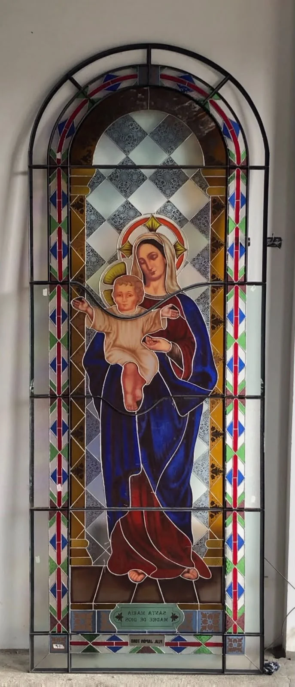

NUESTRO OFICIO / FABRICACIÓN
Fabricación
El arte de transformar el vidrio
Cada vitral se elabora artesanalmente mediante un proceso de precisión y conocimiento técnico. Trabajamos con cinta de cobre y cañuela de plomo; las operaciones de ensamblaje cambian según la técnica elegida. La pintura artística y el horneado se realizan cuando el diseño lo requiere.

NUESTRO TRABAJO
Nuestra manera de trabajar
El trabajo artesanal
La fabricación transforma el diseño aprobado en una obra de vidrio. Comenzamos con la impresión del diseño a escala real, la asignación de colores y texturas, y la preparación de plantillas. Cada pieza se corta y pule cuidadosamente para alcanzar la geometría prevista.
Pintura y tratamiento del vidrio
Cuando la composición lo requiere, aplicamos pintura sobre vidrio y grisalla para desarrollar detalles y volúmenes. Estas piezas se someten posteriormente a horneado para fijar la pintura.
Técnicas de ensamblaje
Trabajamos con cinta de cobre y cañuela de plomo. En la primera técnica, las piezas se encintan y se unen mediante soldadura. En la segunda, se ensamblan con perfiles de plomo, se sueldan las uniones y se realiza el masillado. Los procedimientos varían según la técnica elegida.
Acabado y control
El proceso concluye con la limpieza final y la revisión de uniones, geometría y acabados, preparando cada panel para su instalación.